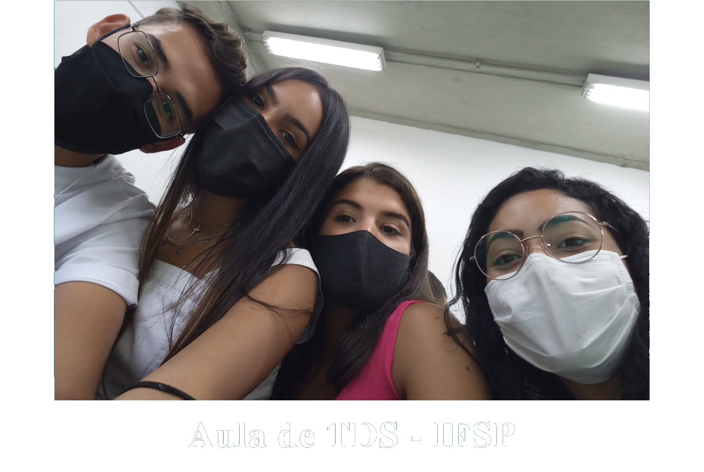

|

|
Em março de 2022, quatro colegas de classe resolveram desenvolver um projeto. Eles não sabiam, mas uma grande parceria estava por vir! A junção desta equipe surgiu na aula de TDS (Teoria e Desenvolvimento de Sistemas), quando a professora Daniela Santana empregou um projeto anual para a matéria. Fascinados por filmes e livros sobre guerras, os estudantes decidiram colocar a ideia adiante e iniciar a criação do tão sonhado site WarLine. |
|
Ainda no começo, os jovens traçaram uma linha de organização e informações necessárias para o desenvolvimento do site, pensando sempre em trazer uma boa usabilidade e evitando conteúdos de forma maçante. E, bem, o sucesso não foi instantâneo. Mas os amigos não desistiram do projeto, tentaram e fizeram o site caminhar. Até que, infelizmente, Giovana e Pedro decidiram sair da instituição deixando o projeto nas mãos apenas de Danyelle e Kaliny. As duas garotas não se intimidaram e optaram por continuar esse sonho. Foi difícil, mas a determinação das amigas e apoio dos demais colegas serviram de motivação para isso acontecer. No dia 08 de novembro de 2022 o tão esperado site WarLine foi lançado. “Trabalhar com a Kaly foi muito engraçado e acolhedor, soubemos conciliar nossas diferenças e nos tornamos uma grande equipe! O processo não foi fácil, acho que ela irá concordar, ainda mais depois da saída do Pedro e da Giovana. Choramos e quase desistimos desse sonho, nossos colegas foram essenciais para o desenvolvimento desse projeto. Hoje eu só tenho a agradecer por essa conquista e agradecer também a Kaly, por não desistir disso tudo!” - Danyelle Santana “Todos os dias entramos no site com um enorme sentimento de gratidão e satisfação! Agradeço muito por ter a Dany como minha parceira, e agradeço ainda mais por ela não ter desistido dessa loucura, de forma positiva, claro. Tivemos muitos obstáculos pelo caminho, muitas vezes pensamos em desistir! Mas quando uma desanima, a outra está ali para animar e apoiar, e eu nunca me senti sozinha nisso aqui!” - Kaliny Victória |